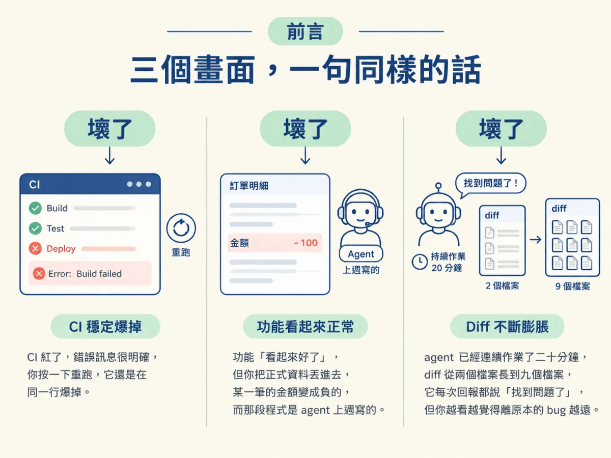
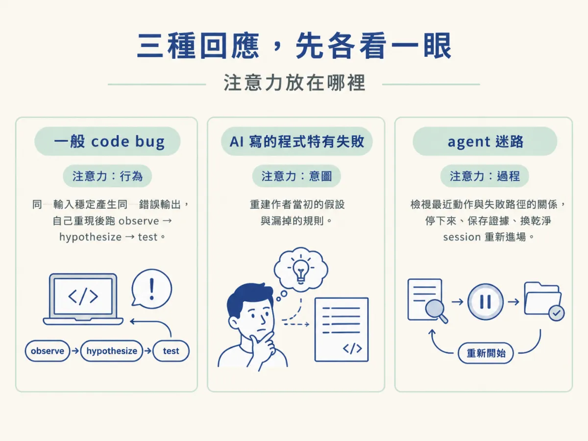
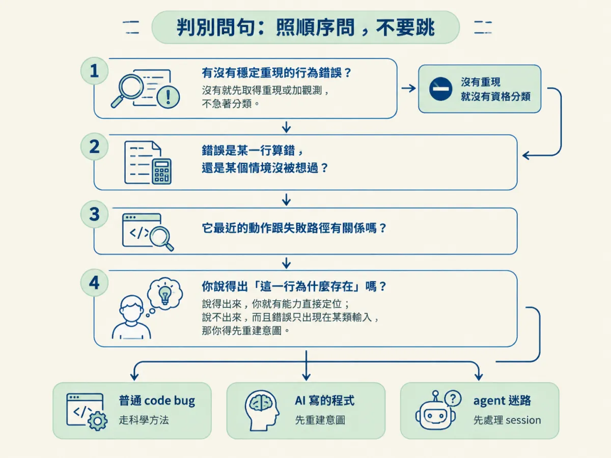
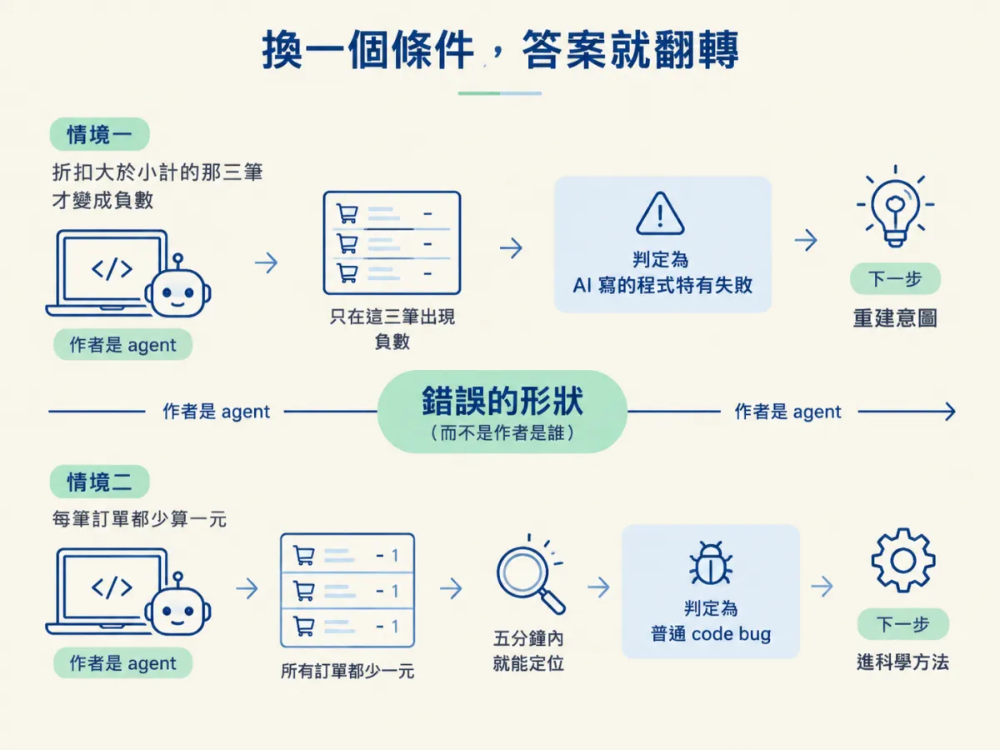

用徵兆判斷手上的狀況是哪一種壞、選出對應的回應，並說出選錯時實際會付出什麼代價。
上一節我們把三種壞法分開了。現在把三個很常見的畫面並排給你看：
第一個，CI 紅了，錯誤訊息很明確，你按一下重跑，它還是在同一行爆掉。第二個，功能「看起來好了」，但你把正式資料丟進去，某一筆的金額變成負的，而那段程式是 agent 上週寫的。第三個，agent 已經連續作業了二十分鐘，diff 從兩個檔案長到九個檔案，它每次回報都說「找到問題了」，但你越看越覺得離原本的 bug 越遠。

三個畫面，你都會說「壞了」。但如果你對三個都用同一句話回應，一句「幫我修好」，你會在第二個浪費一個下午，在第三個把整段對話搞爛。這一節要做的事，就是把那句「壞了」換成一組可以依序問出口的問題，讓你在動手之前就知道注意力該放在哪裡。
先講清楚：這不是在選工具，也不是在選哪個 skill。這是在選接下來十分鐘，你的注意力要放在哪裡。
放錯位置的代價，比你想像中高。因為除錯最貴的不是打字，是你花在錯的東西上的注意力：一直叫 agent 去修一個它看不見的 bug、太早清掉一個已經收集到證據的 session、或花一小時改程式碼而真正的問題出在十個 turn 之前。三種都很貴，只是貴在不同地方。
一般 code bug 的回應是：你自己把它重現出來，然後跑科學方法。重點在「行為」：同一個輸入，穩定地產生同一個錯誤輸出。你不需要知道作者在想什麼，你只需要知道哪一段程式讓好輸入變成壞輸出。
AI 寫的程式特有的失敗 的回應是：先把作者當初的決定重建出來。重點在「意圖」：它當初假設了什麼、漏掉了哪條規則、把哪個決定默默做掉了。你會需要讀程式、比對規格、找出那個沒被考慮到的情境，而不是急著讓錯誤消失。
agent 迷路 的回應是：先處理 session，不是處理程式。重點在「過程」：它最近的動作跟失敗路徑有沒有關係、diff 是朝著原因收斂還是發散。該做的是停下來、把它已經收集到的證據帶走，換一個乾淨的狀態重新開始。

| 徵兆 | 你接下來十分鐘做什麼 | 選錯的代價 |
|---|---|---|
| 同一個輸入，穩定產生同一個錯；錯誤跟誰寫的無關 | 自己重現，縮小範圍，跑 observe → hypothesize → test | 把它當成 agent 迷路，你會不停重開 session，卻從來沒真的重現過一次 |
| happy path 全過，只有某類真實資料、某條權限、某個邊界才爆；程式是 agent 寫的 | 回頭重建它當初的假設與決定，找出它沒考慮到的情境 | 當成一般 bug 硬修，你會一直叫它去修一個它看不見的東西，或直接把症狀 clamp 掉 |
| 沒有穩定的錯誤行為；重複同一個動作、來回改同一批檔案、diff 持續變大 | 停下來，保存證據，換乾淨的 session 重新進場 | 當成一般 bug 繼續改，你會花一小時修程式，而問題其實在十個 turn 之前就發生了 |
表格中間那一欄才是重點：它不是「這個名詞的定義」，而是「你接下來十分鐘的手要往哪裡動」。如果一個分類沒有改變你的下一個動作，那個分類對你就沒有用。
把這四句照順序問一次，通常三十秒內就有答案。
第一句：有沒有一個穩定重現的、行為上的錯？ 注意是「行為」：同一個輸入進去，同一個錯誤出來。如果沒有，先別分類，你現在缺的是重現，不是修法。如果連錯誤都只出現過一次、之後再也重現不了，你需要的是加觀測（log、assertion、截圖），讓它下次出現時留下證據。
第二句：錯誤是「某一行算錯」，還是「某個情境沒被想過」？ 前者是普通 bug；後者通常是 AI 寫的程式那種失敗。這裡的判斷依據不是「程式誰寫的」，而是錯誤的形狀：每一筆都錯同一個地方，跟「只有跨月、只有空陣列、只有沒有權限的角色才錯」，是兩種不同的東西。
第三句：它最近的動作，跟失敗的路徑有關係嗎？ 打開它這幾個 turn 動過的檔案，對照失敗發生的地方。如果它一直在改跟錯誤無關的檔案、diff 越改越大、同一個檔案改了又改回來，那不是除錯，那是在原地打轉。
第四句：你說得出「這一行為什麼存在」嗎？ 說得出來，你就有能力直接定位；說不出來，而且錯誤只出現在某類輸入，那你得先重建意圖。這一題不是要你承認自己不懂，而是要你判斷「現在缺的是證據，還是缺的是理解」。

把剛才的折扣案例走完一次。
情境：一個 agent 上週寫的折扣功能，staging 一切正常。你把正式資料灌進去，有三筆訂單的折扣變成負數，客戶等於要倒貼。程式碼你讀過了，寫得很漂亮。
第一句：有沒有穩定重現的行為錯誤？有。固定那三筆，每次跑都一樣，而且你能指出是折扣那一段算出負值。到這裡，至少排除了「agent 迷路」，因為錯誤有穩定、可觀察的行為。
第二句：是某一行算錯，還是某個情境沒被想過？你去看那三筆資料，共同點是「折扣金額大於小計」。程式裡從頭到尾沒有處理過這個組合。這不是某一行打錯字，是作者預設了「折扣一定小於小計」。所以這是第二種：AI 寫的程式特有的失敗，錯在一個沒被考慮到的情境。
所以你的下一個動作不是叫它「把負數修掉」。那正是把症狀 clamp 掉：你讓畫面變好看了，卻沒有人知道為什麼會走到負數。正確的動作是回頭重建它當初的假設：折扣的來源是什麼？上限應該由誰保證？是資料層就該擋，還是顯示層就該夾住？這些問題有答案之後，修法通常只有一兩行。
這就是完整的判斷：先確認有穩定重現的行為錯誤，再看錯誤的形狀是「算錯」還是「沒想過」，最後才決定注意力放在行為、意圖還是 session。
現在只改一件事：同一段折扣程式，錯誤變成「每一筆訂單都少算一元」，五分鐘內就能重現，而且你能直接指出是哪一行的捨入寫錯。
第二句的答案變了。錯誤不再是「某個情境沒被想過」，而是普遍性、單點、可指認的算錯。雖然程式還是 agent 寫的，但這時候它就是一隻普通的 code bug，因為它的行為跟誰寫的無關，而且你不需要重建任何意圖就能定位。你的動作也跟著換：直接進科學方法，重現、縮小、下一個假設、驗證。
注意這裡翻轉的關鍵不是「作者是誰」，而是錯誤的形狀。很多人在這裡卡住，因為他們用「程式是不是 AI 寫的」來分類。但一隻普通的 bug 不會因為作者是 agent 就變成第二種；第二種的定義是「失敗來自作者沒考慮到的東西」，不是「作者的職業」。反過來也一樣：你自己寫的程式，如果你已經想不起來某段為什麼那樣寫，而錯誤只出現在一個你從沒想過的情境，那你面對的其實是第二種的難題：你得先重建自己的意圖。

有些情況你現在就是分不出來，這很正常。最常見的是：agent 一直說「已修好」，但你從來沒看過它失敗的樣子。這時候你還沒有資格分類，因為三種判別都建立在「有一個可觀察的失敗」上面。你需要先拿到重現，或至少加一段觀測讓下一次失敗留下證據。
另一種是：你分不清它是「沒想過某個情境」還是「已經迷路」。問第三句，看它最近的動作跟失敗路徑的關係。如果它正在處理的檔案就是錯誤發生的地方，那還在範圍內；如果它已經飄到三個不相干的模組，那先把 session 拉回來，再談錯誤的形狀。
分流不是選工具，是選注意力放在哪裡。先問「有沒有一個穩定重現的行為錯誤」：沒有，就先取得重現或加觀測，別急著分類；有，再問「錯誤的形狀是某一行算錯，還是某個情境沒被想過」：前者是普通 code bug，你自己重現並跑科學方法；後者是 AI 寫的程式那種失敗，先重建作者當初的假設。如果錯誤根本沒有穩定行為，而是 agent 的動作在原地打轉、diff 持續發散，那是第三種，該處理的是 session，不是程式。翻轉條件的關鍵不是作者是誰，而是錯誤的形狀。
分流完成、確認是一般 bug 之後，接下來就是那套可以套在任何程式上的方法。下一節會把它拆成可以照著跑的步驟，並且說明為什麼「一次只改一件事」是整個方法裡唯一不能妥協的習慣。